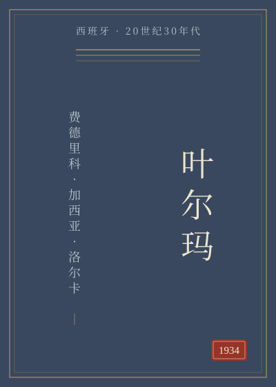
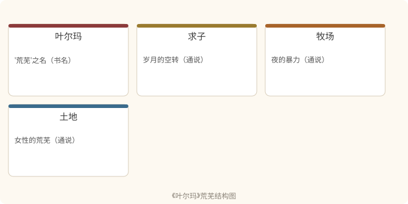

叶尔玛
一、基本信息
| 作者 | 费德里科·加西亚·洛尔卡 |
|---|---|
| 成书/出版 | 1934年（Britannica B355：Yerma (1934)） Federico Garcia Lorca — Encyclopaedia Britannica（百科全书） |
| 国别/地区 | 西班牙 |
| 时代 | 近代 · 20世纪30年代 |
| 体裁 | 悲剧 |
| 语言 | 西班牙语 |

《叶尔玛》荒芜结构图（主题·结构图）
二、创作背景
Britannica（B355）：Yerma (1934)——洛尔卡民间悲剧三部曲之一。
Britannica（B355）：洛尔卡——'the most important Spanish poet and playwright of the 20th century'。
题材（通说待核）：'叶尔玛'（ barren 之意）——无嗣农妇的绝望与弑夫。
三、内容脉络
（通说待核）叶尔玛求子的岁月与牧场之夜。
（通说待核）'荒芜'的命名与终局的暴力。
四、主要人物表
| 人物 | 身份 | 说明 |
|---|---|---|
| 叶尔玛 | 农妇 | （B355 书名人物） |
| 胡安 | 丈夫 | （通说待核） |
五、主题与艺术特点
- '荒芜'与生育（书名语境——通说待核）。
- 农村悲剧三部曲之二（B355 三部曲语境）。
- 女性的身体与土地（通说待核）。
六、影响与评论
- Britannica：民间悲剧三部曲（B355）。
Federico Garcia Lorca — Encyclopaedia Britannica（百科全书） - Britannica：西班牙戏剧'second Golden Age'（B355 交叉）。
Federico Garcia Lorca — Encyclopaedia Britannica（百科全书）
七、阅读建议
难点
- 安达卢西亚农事意象。
- 'Yerma'词义（荒芜）。
- 《叶尔玛》中译本（人民文学等——通说待核）。
- 西班牙文原版。
三部曲之二；与《血婚》《阿尔巴之家》连读。
八、待核实
- 胡安人名核对（通说）。
- 1934年首演细节待核。
- '荒芜'词义核对。
本页主要来源
费德里科·加西亚·洛尔卡的其他收录作品：吉普赛谣曲血婚叶尔玛贝尔纳达·阿尔巴的家